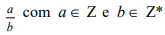
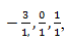
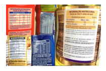
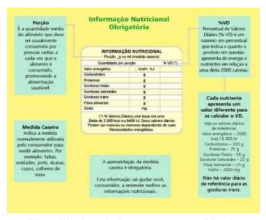

Capítulo 1 – o conjunto dos números racionais, as Grandezas e medidas no contexto da indústria Alimentícia
ContextualizandoNa indústria alimentícia é muito importante a rotulagem nutricional dos alimentos e, para a promoção da alimentação saudável, é destacada em grande parte dos estudos e pesquisas que envolvem a área da nutrição e sua relação com estratégias para a redução do risco de doenças crônicas. O uso das informações nutricionais obrigatórias nos rótulos dos alimentos e bebidas embaladas está regulamentado no Brasil desde 2001.
As indústrias fabricantes de alimentos e bebidas embalados prontos para oferta ao consumidor estão se adequando à nova legislação que determina a declaração de informação nutricional obrigatória de valor energético, carboidratos, proteínas, gorduras totais, gorduras saturadas, gorduras trans, fibra alimentar e sódio, nos rótulos de alimentos e bebidas embalados. As informações nutricionais referem-se ao produto na forma como está exposto à venda e devem ser apresentadas em porções, e medidas caseiras correspondentes, devendo conter ainda o percentual de valores diários para cada nutriente declarado, exceto no caso dos ácidos graxos trans, cujo percentual de valor diário não deve ser declarado.
A tabela acima mostra as informações nutricionais de cada alimento e para fazer esses cálculos, é necessário ter conhecimentos dos números racionais, porcentagem e das grandezas e medidas que possibilitam determinar as proporções corretas de cada componente. Quais são as diferentes formas dos números racionais e quais são as funções dos números?
Caro aluno!
Neste capítulo, você vai reconhecer os conjuntos numéricos, especialmente o Conjunto dos Números Racionais e suas diferentes representações. Vai perceber que os números servem para contar, ordenar, indicar medida e codificar e que, nos rótulos dos produtos alimentícios, usam-se os números para indicar as grandezas de massa.
(RE)CONSTRUINDO CONHECIMENTOS
O conjunto numérico formado pelos números que surgiram pela necessidade do homem de indicar e registrar quantidades chama-se Conjunto dos Números Naturais e é representado simbolicamente por N e por chaves N = {1, 2, 3, 4, ...}.
Ao longo da História da humanidade, os conjuntos numéricos foram se tornando mais complexos atendendo a outras necessidades do homem.
O conjunto dos Números Inteiros, representado por Z, símbolo esse originário da palavra Zahl, que em alemão significa número é constituído de elementos que se originaram da relação entre dois números naturais, como saldo de gols. Por exemplo: pense em dois times de futebol A e B. Supondo que A faça dois gols e B faça um gol. O saldo de gol do time A é de 1 gol a seu favor e o de B é de um gol contra si. O saldo de A pode ser representado por +1 e o de B por -1.
O conjunto dos números inteiros é representado Z e por chaves temo: Z = {..., -2, -1, 0, 1, 2, ...}.
PARA ENTENDER MAIS
Os números inteiros e a conquista da subtração Incorporando a operação de subtração nas operações com os números naturais, vemo-nos diante da necessidade de ampliação desse conjunto. O novo conjunto que surge é chamado de conjunto dos números inteiros (a letra Z usada como símbolo desse conjunto é a inicial da palavra Zahl, que significa “número” em alemão). A idéia dos números negativos tem suas prováveis origens associadas ao comércio e à necessidade da representação de créditos e débitos. Observe que a operação de adição com os inteiros negativos tem significado muito claro, quando pensamos, por exemplo, em saldos e créditos de uma conta bancária. Se uma conta está com saldo negativo de R$100,00 e o cliente emite um cheque de R$50,00 , ele ficará com saldo negativo de R$150,00; podemos representar essa situação por meio de uma adição de inteiros: (-100) + (-50) = -150. Extraído de Paradidático História e criação das idéias matemáticas.
Nenhum dos conjuntos numéricos discutidos até esse momento permite que possamos operar a tecla da divisão de uma calculadora sem restrições. Apesar de conseguirmos fazer uma série de divisões dentro do conjunto dos inteiros sem necessitar de outro conjunto numérico para representar os resultados (ex: -8 : 2 = -4, 192 : 32 = 6, etc), várias divisões não são possíveis nesse conjunto por apresentarem resto diferente de zero.
Incorporando a operação de divisão, números como que antes não tinham significado, agora passarão a ter.
Como poderíamos descrever um conjunto que, além de incorporar os números inteiros, incluísse também frações como as três que citamos acima?
A saída é simples: basta enunciar um novo conjunto e estabelecer que o novo conjunto será formado por todos os números que podem ser escritos na forma de fração, onde o numerador será um inteiro e o denominador um inteiro diferente de zero.
Esse novo conjunto recebeu o nome de Conjunto dos Números Racionais, simbolizado por Q e é formado por todo número que pode ser escrito na forma  número racional, cujo símbolo éQ
Assim como o conjunto dos números inteiros incorporava os números naturais, por essa definição, o conjunto dos racionais incorpora os números inteiros. Mesmo números inteiros como -3, 0 e 1 estão em Q porque podem ser escritos como  forma na definição de número racional. Vale destacar do ponto de vista de conjuntos que todo o número natural é também um número inteiro, mas nem todo número inteiro é um número natural. Segue também que todo inteiro é racional, mas nem todo racional é inteiro. Você pode encontrar vários exemplos que justifiquem essas afirmações.
Para investigar em detalhes o conjunto dos racionais, tomemos dois de seus representantes, os números 1/2 e 1/3. Observe que, ao utilizar o algoritmo da divisão, encontraremos que 1/2 = 0,5 e 1/3 = 0,333...
A notação em que utilizamos vírgula chama-se representação decimal do número.
Nos dois exemplos temos que as representações decimais possuem formas distintas. No primeiro caso, temos uma representação decimal com um número finito de casas depois da vírgula e, no segundo, a representação decimal possui infinitas casas periódicas depois da vírgula (dízima periódica). Observe outros exemplos no diagrama abaixo.
Você deve ter notado que os números racionais escritos na forma fracionária podem ter representação decimal finita (0,5, uma decimal exata) ou representação decimal infinita e periódica (0,333..., uma dízima periódica) .
Analisando os diagramas 1 e 2, no diagrama 1 você pode observar que os números racionais estão escritos na forma de decimal exata e de decimal infinita periódica e, no diagrama 2 que o Conjunto dos Números Racionais contém que contém o que é simbolizado por
Representando frações
Observe as representações das frações:
situação. Por exemplo, em uma receita, usa-se 1/2 copo de leite e não 50% do copo de leite, no desconto de uma venda, diz-se 10% do valor total da compra e não 1/10 ou 0,1 do valor total da compra.
Uma fração é uma divisão indicada. Ao efetuar a divisão, vimos que o resultado pode ser um número decimal exato ou um número decimal infinito com casas decimais que se repetem infinitamente isto é um número decimal infinito periódico.
Veja por exemplo, a fração 1/2 , dividindo 1 por 2, obtém-se 0,5 um número decimal exato, na fração 1/3 , dividindo 1 por 3, obtém-se 1,333... um número decimal infinito periódico pois o número 3 se repete infinitamente.
PARA ENTENDER MAIS
A mídia e os números
Lendo artigos propostos na mídia, encontram-se diferentes formas de expressar quantidades:
Produtores de 42 municípios de Alagoas, Paraíba, Pernambuco, Minas Gerais e Sergipe vão receber R$ 5,4 milhões referentes ao pagamento do Garantia-Safra de janeiro.
A Portaria que determina o pagamento foi publicada na edição do “Diário Oficial da União” desta quinta-feira (16). Até maio de 2020, o governo espera que a cobertura do Garantia-Safra alcance R$ 27,3 milhões.
Têm direito a receber o benefício os agricultores com renda mensal de até um salário mínimo e meio, quando tiverem perdas de produção igual ou superior a 50%. ZH16/01/2020
No texto, os números a 5400000 (cinco milhões e 400mil) e 27300000 (vinte e sete milhões e trezentos mil) que são números naturais estão escritos na forma decimal, 5,4 milhões, 27,3 milhões, o que torna a mais agradável e mais fácil o texto.
Na mídia, os racionais escritos na forma de porcentagem também são bastante utilizados. Dizer que serão beneficiados os agricultores que tiverem perda de produção igual ou superior a 50% é dizer que serão beneficiados os agricultores que perderam 1/2 ou a metade da sua produção.
Os números e seus diferentes usos ou funções
Além de diferentes formas de escrever os números, eles têm diferentes usos ou funções. Os números servem para contar, para ordenar, para indicar medida e como códigos.
VOCÊ SABIA?
OS RÓTULOS DE PRODUTOS ALIMENTÍCIOS
 A rotulagem nutricional dos alimentos segue normas que são revisadas constantemente com o objetivo de facilitar ao consumidor a compreensão das informações, deixando os dados nutricionais nos rótulos dos produtos mais claros e visíveis.
Nos rótulos, devem constar as principais informações sobre os produtos, o que é regulamentado pela Agência Nacional de Vigilância Sanitária (ANVISA).
 “A ideia é, ainda, ampliar a abrangência de informações nutricionais e aprimorar a precisão dos valores declarados pela indústria”. Nos rótulos, devem estar presentes: a lista de ingredientes, sua origem, o prazo de validade, o conteúdo líquido, o lote, e a tabela nutricional que é obrigatória. As informações contidas nas tabelas nutricionais são expressas por números que indicam medida e as medidas utilizadas, via de regra, são as medidas de massa
AS MEDIDAS DE MASSA
A unidade padrão de massa no sistema internacional de unidades é o quilograma (kg). O grama é a principal medida de massa existente. As medidas maiores do que o grama que são chamadas de múltiplos do grama e as menores, submúltiplos do grama. Como o sistema padrão de medida de massa é decimal, as transformações entre os múltiplos e submúltiplos são feitas multiplicando-se ou dividindo-se por 10.
As unidades do sistema métrico decimal de massa são: quilograma (kg), hectograma (hg), decagrama (dag), grama (g), decigrama (dg), centigrama (cg), miligrama (mg) como você pode verificar na tabela.
Assim:
Se quisermos saber quantos gramas têm em um quilograma, ou quantos miligramas tem em 0,03g multiplicamos por mil:
1kg = 1000g e 0,03g = 30mg
Se quisermos saber quantos gramas têm em 4 miligramas ou quantos quilogramas têm em 4200gr , dividimos por 1000.
4mg = 0,004g e 4200g = 4,2kg
UMA PAUSA PARA PENSAR
Outras medidas de massa
A tonelada é um múltiplo do grama, sendo que uma tonelada equivale a 1 000 000 g ou 1 000 kg. Essa unidade é muito usada para indicar grandes massas.
A arroba é uma unidade de medida usada no Brasil, para determinar a massa dos rebanhos bovinos, suínos e de outros produtos. Uma arroba equivale a 15 kg.
O quilate é uma unidade de massa, quando se refere a pedras preciosas. Neste caso 1 quilate vale 0,2 g.
PRATICANDO: REFLEXÃO E AÇÃO
1. Coloque os números na representação decimal.
2. Marque com um x os números que representam dízimas periódicas.
a) ( ) 0,25
b) ( ) 0,16666...
c) ( ) 0,15
d) ( ) 0, 113113113...
3. Marque verdadeiro(V) ou falso (F) nas alternativas abaixo.
a) ( ) Todo número inteiro é Racional.
b) ( ) Todo Natural é Racional.
c) ( ) Todo número Racional é Inteiro.
d) ( ) As dízimas finitas e as dízimas periódicas são números Racionais.
4) Escreva por extenso os números inteiros escritos na forma decimal:
a) 23,35 milhões
b) 5, 345 bilhões
c) 4,5milhões
5) Marque verdadeiro(V) ou falso (F) nas alternativas abaixo.
a) 2,5kg = 250g ( )
b) 500mg = 0,5g (...)
c)1000g = 1kg (…)
d) 250g = 0,25 kg (…)
O QUE APRENDI
Neste capítulo, no contexto da indústria alimentícia, aprendemos que os números inteiros fazem parte do Conjunto dos Números Racionais, pois podem ser escritos na forma a/b , sendo a e b são números inteiros e b ≠ 0. Também aprendemos que em sua representação, o número racional pode ser um número decimal finitoa ou númreo decimal infinito periódico (uma dízima periódica). Entendemos que os números têm diferentes usos e funções e que uma das funções dos números é indicar medida, que na indústria alimentícia, a confecção dos rótulos dos produtos é um tarefa especial que é regulamentada e controlada pela ANVISA um órgão oficial. Com a análise dos rótulos, revisamos as grandezas de massa e suas unidades de medida.
RESPOSTAS DA SEÇÃO: PRATICANDO – REFLEXÃO E AÇÃO
1.
a) 0,4
b) 0,6
c) 0,333333...
d) 0, 28571429
2.
Letras a e c
3.
a) V b) V c) F d) V
4.
a)vinte e três milhões e trezentos e cinquenta mil (23350000).
b)cinco bilhões e trezentos e quarenta e cinco milhões (5345000000).
c)quatro milhões e quinhentos mil (4500000).
5.
a) F
b) V
c) V
d) V